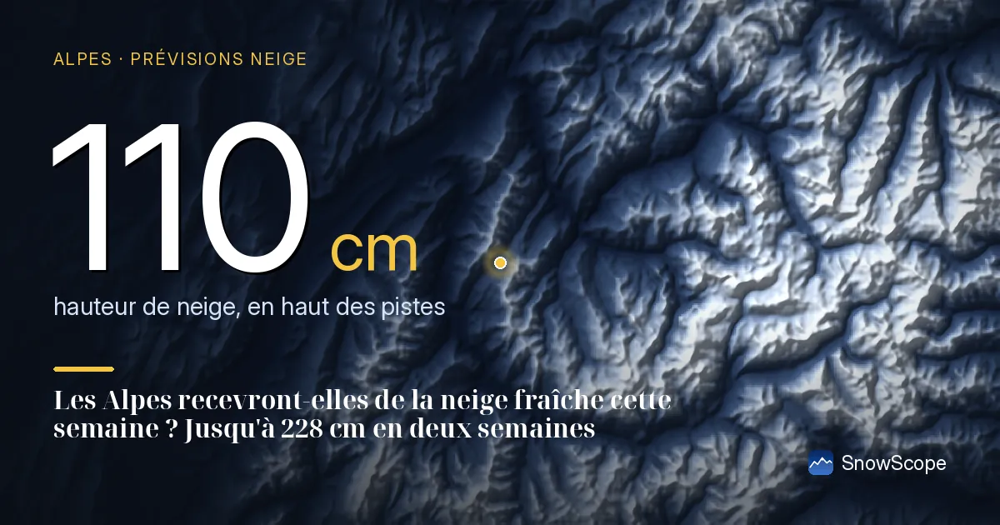
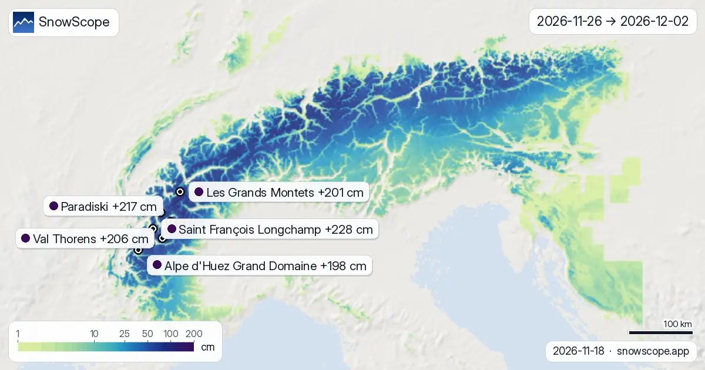

Les Alpes recevront-elles de la neige fraîche cette semaine ? Jusqu'à 228 cm en deux semaines
Oui, une neige importante arrive sur les Alpes au cours des deux prochaines semaines, la première vague arrivant dès jeudi. Nos modèles de prévisions s'accordent à dire que les terrains d'altitude au-dessus de 2 500 m verront le plus de neige, certaines zones accumulant plus de 120 cm début décembre.
Consultez les prévisions neige en temps réel pour Saint François Longchamp sur l'application SnowScopeHauteurs de neige, alertes poudreuse et carte 3D, gratuitement.
Quand la neige arrive-t-elle ?
Le premier événement neigeux majeur commence demain, jeudi 19 novembre. Saint François Longchamp et Paradiski mèneront les Alpes avec respectivement 35 cm et 34 cm ce jour-là, tandis que Les Grands Montets et Arêches Beaufort enregistrent aussi des chutes importantes. Cette première vague représente l'essentiel des chutes de jeudi dans la région.
Vendredi 20 novembre apporte un deuxième événement important, notamment aux Grands Montets (33 cm) et à Paradiski (30 cm). En revanche, Val Thorens enregistrera les plus fortes chutes quotidiennes plus tard, mercredi 25 novembre, avec 32 cm. Le schéma change ensuite : la deuxième semaine (26 novembre au 2 décembre) apporte un régime plus humide et moins concentré, bien que le 29 novembre soit à nouveau actif dans la majeure partie de la région.
| Station | Hauteur de neige | Neige fraîche, 72 h | Attendu, jours suivants | Sommet |
|---|---|---|---|---|
| Saint François Longchamp | 42 cm | 57 cm | 96 cm | 2 516 m |
| Paradiski | 51 cm | 72 cm | 90 cm | 3 205 m |
| Val Thorens | 110 cm | 82 cm | 104 cm | 3 175 m |
| Les Grands Montets | 60 cm | 82 cm | 105 cm | 2 768 m |
| Arêches Beaufort | 25 cm | 51 cm | 92 cm | 2 319 m |
| Alpe d'Huez Grand Domaine | 71 cm | 59 cm | 91 cm | 3 306 m |

Où la neige s'accumulera-t-elle le plus ?
L'altitude joue un rôle crucial ici. Les terrains d'altitude au-dessus de 3 000 m verront en moyenne 120 cm de neige fraîche sur les deux semaines, certaines pentes atteignant 153 cm. Entre 2 500 et 3 000 m, attendez-vous à environ 70 cm, montant jusqu'à 128 cm dans les lieux favorables. Même en moyenne montagne (2 000–2 500 m), la médiane est de 61 cm, bien que certaines zones dépasseront 100 cm.
Parmi les stations nommées, Saint François Longchamp est en tête avec 228 cm prévus sur deux semaines, suivi de près par Paradiski (217 cm), Val Thorens (206 cm) et Les Grands Montets (201 cm). Saint François Longchamp se situe à une altitude optimale entre 1 761 m et 2 516 m, bénéficiant bien des deux systèmes orageux. Toutes ces stations devraient connaître neuf jours ou plus avec 5 cm ou plus de neige fraîche.

Comment la neige se répartit-elle entre les deux semaines ?
La première semaine (19–25 novembre) domine la prévision : elle représente environ 46 pour cent de la neige totale qui tombera en 14 jours. Saint François Longchamp devrait recevoir 138 cm les jours 1–7, puis 90 cm les jours 8–14. Le régime est concentré au début car les deux premiers systèmes (jeudi et vendredi) sont nets et bien définis, tandis que la deuxième semaine devient plus dispersée.
La deuxième semaine stabilise les conditions mais apporte moins de neige fraîche par jour. Début décembre, les stations approchent la saturation et les modèles montrent des chutes de neige diminuantes. Ce régime en deux temps est typique du setup de fin d'automne dans les Alpes : un système énergique pour démarrer la saison, suivi d'une recharge plus lente et plus calme.

Que dit notre modèle sur la confiance ?
Les modèles ECMWF et NOAA s'accordent sur les principaux systèmes des 19 et 20 novembre, ce qui augmente la confiance pour ces jours. Les totaux sur 14 jours affichent des bandes d'incertitude plus larges : l'estimation basse de Saint François Longchamp est de 142 cm et l'estimation haute de 314 cm, reflétant la dispersion typique lorsqu'on regarde plus loin. En revanche, les trois premiers jours sont plus resserrés car les régimes à court terme sont plus prévisibles.
Dans les Alpes, nous estimons que 95 500 km² de terrain recevront 20 cm ou plus au cours des deux prochaines semaines, et environ 47 300 km² dépasseront 50 cm. Ce sont des moyennes régionales générales ; l'accumulation réelle variera selon l'angle de pente, l'exposition et les vents locaux.
À quoi faut-il faire attention ?
La neige en début de saison peut être fine et peut exposer les rochers dans certaines zones, particulièrement en basse altitude. La neige du jeudi 19 novembre peut se tasser rapidement une fois tombée sur un sol plus chaud. Dès vendredi et samedi, la situation s'améliore à mesure que la profondeur cumulée s'accumule.
L'interruption entre le 21 et le 24 novembre est sèche et brève, le temps de consolidation est donc limité avant la prochaine vague le 25 novembre. Les pentes hautes, particulièrement au-dessus de 2 500 m aux stations comme Val Thorens et Paradiski, se rempliront le plus rapidement. Les bases des stations moins élevées peuvent rester mosaïquées jusqu'au milieu de la semaine.
Conseils aux skieurs
- Privilégiez jeudi et vendredi (19–20 novembre) pour les chutes les plus fortes sur une seule journée ; Saint François Longchamp et Les Grands Montets sont en tête ces jours-là.
- Les pentes hautes au-dessus de 2 500 m offriront la meilleure couverture de neige et la plus continue sur les deux semaines ; le terrain de moyenne montagne (2 000–2 500 m) est fiable mais peut être plus fin à la base.
- Surveillez la petite fenêtre sèche du 21–24 novembre : la neige de jeudi et vendredi se tassera pendant cette période, puis le 25 novembre apporte un nouveau renouvellement.
- Rappelez-vous que ces valeurs sont des estimations de modèle moyennes sur le terrain ; la profondeur réelle sur votre piste choisie dépendra de l'exposition, du transport éolien et de l'angle de pente.
- Consultez votre bulletin d'avalanche local avant de skier hors-piste, particulièrement dans les 48 premières heures lorsque la neige fraîche au sol est la plus profonde.
À propos de ces chiffres
Les hauteurs de neige des stations sont la neige la plus épaisse sur le haut du domaine, d'après le modèle de neige SnowScope (environ 1 km, calcul du 18 novembre) ; ce sont des estimations pour une zone, pas une mesure en un point. Les valeurs des stations de mesure sont mesurées à la date indiquée. Les prévisions peuvent changer. Consultez toujours le bulletin d'avalanche officiel avant le hors-piste.
Bulletins d'avalanche officiels: EAWS (Alps)
Citer ce bulletin
Pour la recherche, l'enseignement ou la presse : chiffres et graphiques réutilisables librement sous CC BY 4.0 avec cette citation.
SnowScope (2026), Les Alpes recevront-elles de la neige fraîche cette semaine ? Jusqu'à 228 cm en deux semaines, https://snowscope.app/blog/fr/2026/11/alps-2-week-snow-forecast-maps-18-november-2026.html, consulté le 2026-11-18
SnowScope (Atlas Labs). (2026, November 18). Les Alpes recevront-elles de la neige fraîche cette semaine ? Jusqu'à 228 cm en deux semaines. SnowScope snow reports. https://snowscope.app/blog/fr/2026/11/alps-2-week-snow-forecast-maps-18-november-2026.html
BibTeX
@misc{snowscope2026alps2weeksnowforecastmap,
author = {{SnowScope (Atlas Labs)}},
title = {Les Alpes recevront-elles de la neige fraîche cette semaine ? Jusqu'à 228 cm en deux semaines},
year = {2026},
month = nov,
howpublished = {\url{https://snowscope.app/blog/fr/2026/11/alps-2-week-snow-forecast-maps-18-november-2026.html}},
note = {Published 2026-11-18 11:22 UTC; accessed 2026-11-18}
}· CC BY 4.0 · Méthodes, données et outils →
Suivre Saint François Longchamp
Gratuit : un message quand la neige arrive, et la météo chaque matin.
Autres bulletins neige

Alpe d'Huez vaut-elle le coup en décembre 2026 ? Nous vérifions les probabilités de neige, le prix de départ de 58,00 EUR et comparons avec Les 2 Alpes.

L'Alpe d'Huez fait face au soleil. Comment organiser sa journée selon l'heure et l'altitude, avec la neige de 46 hivers passés, des villages bas au Pic Blanc.

L'Alpe d'Huez Grand Domaine mois par mois : hauteur de neige habituelle en bas, à mi-pente et au Pic Blanc d'après 46 hivers passés, les semaines sûres, les décembres faibles et la tendance.